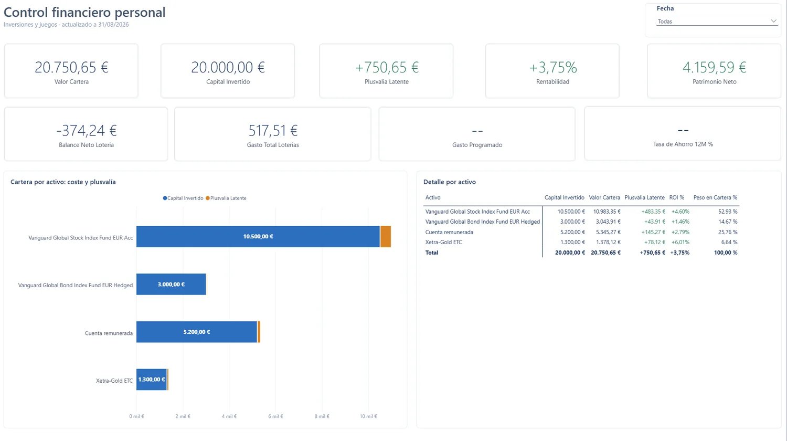
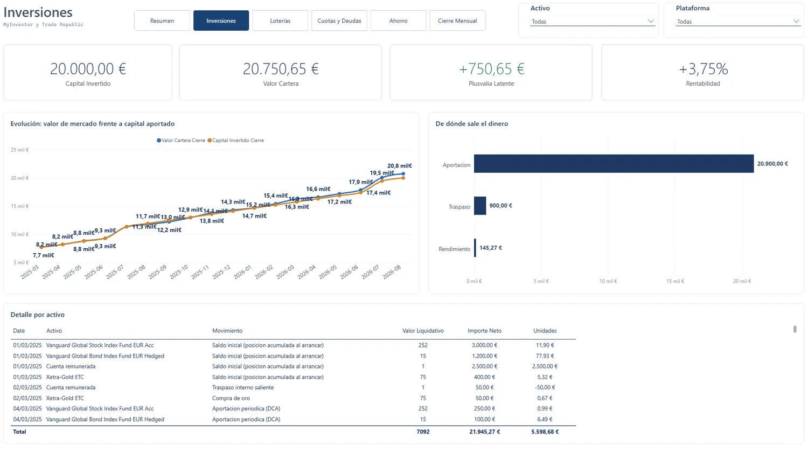
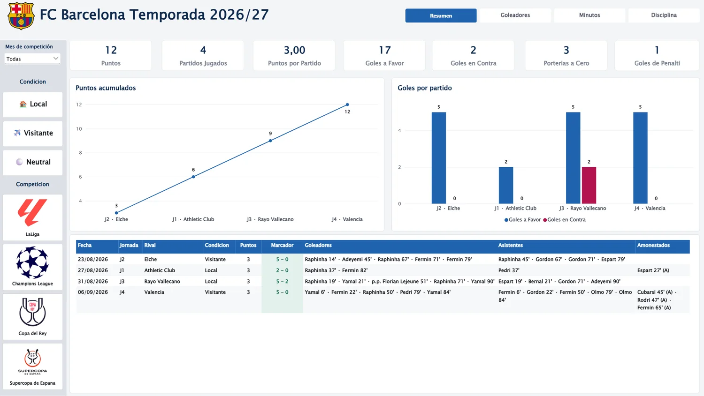
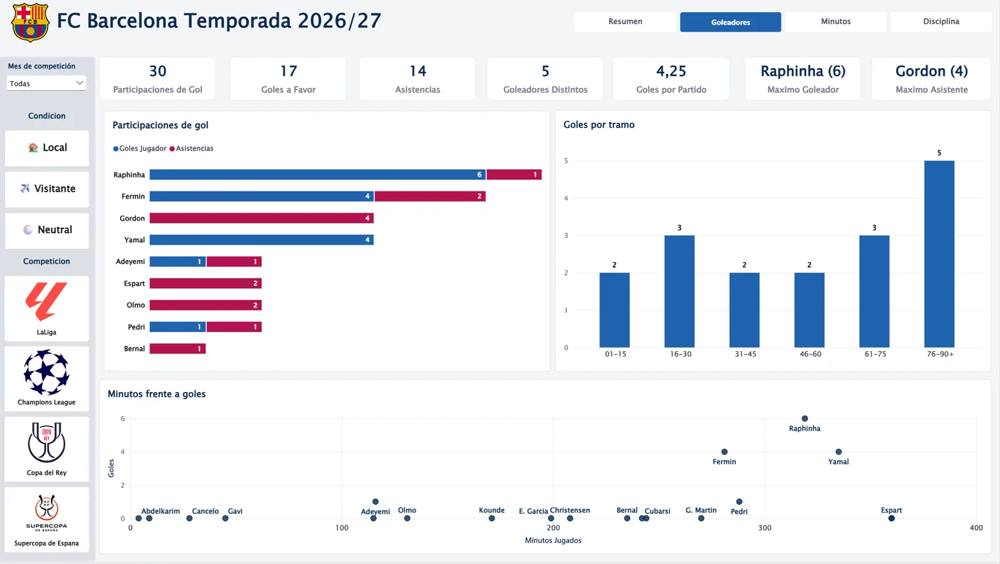
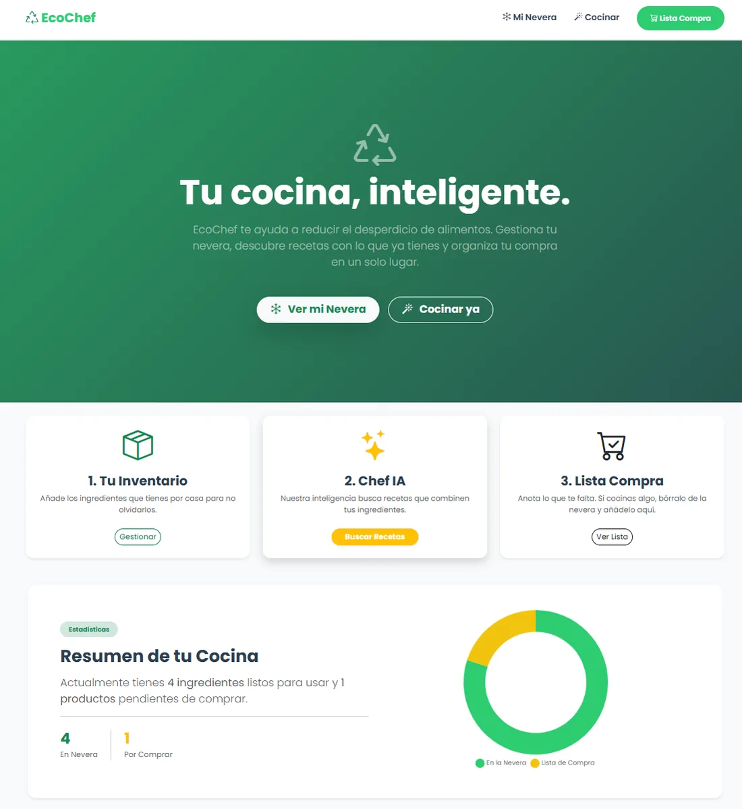
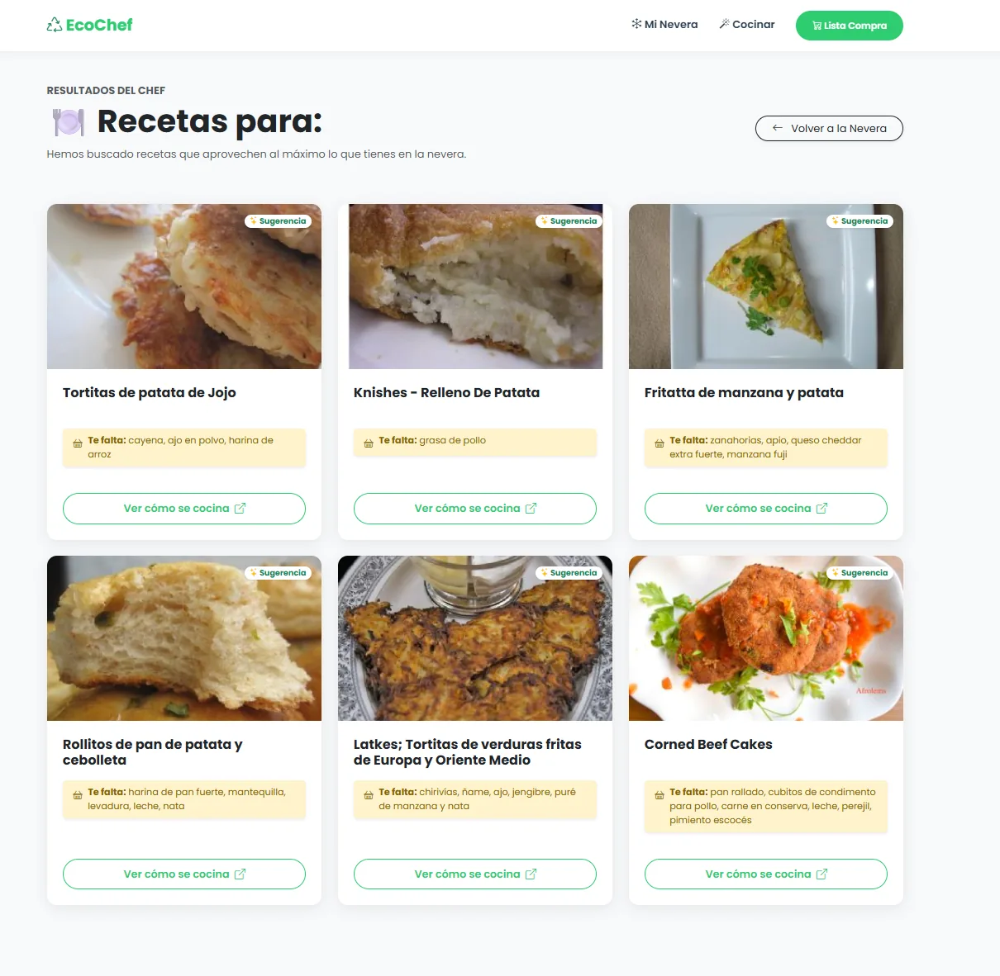

I
Modelado de datos
Primero, el modelo.
Decido la granularidad y separo hechos de dimensiones antes de abrir Power BI. Un modelo bien planteado hace que una pregunta nueva se resuelva añadiendo una medida, no rehaciendo el Excel.
Data Analyst · Madrid
Convierto datos dispersos en modelos que se sostienen.
Un esquema en estrella limpio, medidas DAX que dicen la verdad y un informe que responde la pregunta en la primera pantalla.
Desde 2024
Data Analyst
Power BI, DAX, SQL y Python
Especialidad
Microsoft PL-300
Certificado en 2026
Madrid o remoto
Ubicación
01Origen
Llegué a los datos desde el desarrollo web. Estudié un Grado Superior de Desarrollo de Aplicaciones Web —Java, PHP, bases de datos— y ahí descubrí que lo que más me interesaba no era la pantalla, sino lo que había detrás: de dónde salían esos datos y qué se podía leer en ellos.
Desde 2024 trabajo como Data Analyst. En un BPO me tocaron datos de clientes en Excel y Power BI y, sobre todo, aprendí a automatizar: lo que eran horas de fórmulas y de copiar y pegar acabó convertido en macros, Power Query y dataflows. Hoy, en el sector publicitario, trabajo con proyectos nacionales e internacionales: extraigo en SQL, PostgreSQL y BigQuery, modelo, y monto los informes con los que se decide.
Un modelo bien planteado contesta preguntas que nadie había hecho todavía.
Fuera del trabajo sigo montando modelos por gusto: mis finanzas y la temporada del Barça.
02Método
Tres ideas que sostienen todo lo demás.
I
Modelado de datos
Decido la granularidad y separo hechos de dimensiones antes de abrir Power BI. Un modelo bien planteado hace que una pregunta nueva se resuelva añadiendo una medida, no rehaciendo el Excel.
II
Automatización
Convierto horas de fórmulas y de copiar y pegar en procesos repetibles: macros, Power Query y dataflows que se ejecutan igual cada vez.
III
Comunicación
Informes que responden la pregunta a la primera. El detalle está a un clic; lo importante, a la vista.
03Trayectoria
De lo más reciente a lo más antiguo.
2026→ actualidad
PRIME IT · Sector publicitario
Proyectos publicitarios nacionales e internacionales. Extracción, transformación y modelado con Power BI, Google BigQuery, SQL y PostgreSQL para medir el rendimiento de campañas y operaciones.
2024→ 2026
GI Group · BPO
Análisis de datos de clientes con Excel y Power BI. Automatización de procesos con fórmulas avanzadas, macros, Power Query y dataflows, y dashboards interactivos para tomar decisiones.
2026Julio
Certificación
Microsoft
Certificación oficial de Microsoft sobre preparación, modelado, visualización y despliegue de datos con Power BI.
2025→ 2026
The Power
SQL, Python (pandas, NumPy, Matplotlib), Power BI y Excel avanzado; automatización de informes y técnicas de Big Data.
2024→ 2025
Universidad Alfonso X el Sabio
Machine Learning, NLP y Big Data con Python, R y Scala; Hadoop, Spark y Kafka; servicios de AWS.
2022→ 2024
Universidad Alfonso X el Sabio
Desarrollo full stack con Java, PHP, HTML, CSS y JavaScript, y gestión de bases de datos. Proyecto final: EcoChef.
04Proyectos
Cada ficha cuenta lo mismo: qué problema había, cómo lo abordé y qué salió.
Power BIDAXPower QueryExcel
Datos de demostración


Power BIDAXPower QueryExcel
En curso


PythonFlaskSQLAlchemySQLiteSpoonacular API
Trabajo de Fin de Grado


¿Tienes datos que no cuentan lo que deberían?
Cuéntamelo05Stack
Del modelo al informe publicado.
Extraer, consultar y transformar.
Que lo repetitivo se haga solo.
Microsoft Certified: Power BI Data Analyst Associate (PL-300) Castellano nativo · Inglés B1–B2
06Contacto
Trabajo desde Madrid o en remoto. Escríbeme por correo o por LinkedIn.
{kind=link}
{kind=link}
{kind=link}
{kind=link}
{kind=link}
{kind=link}